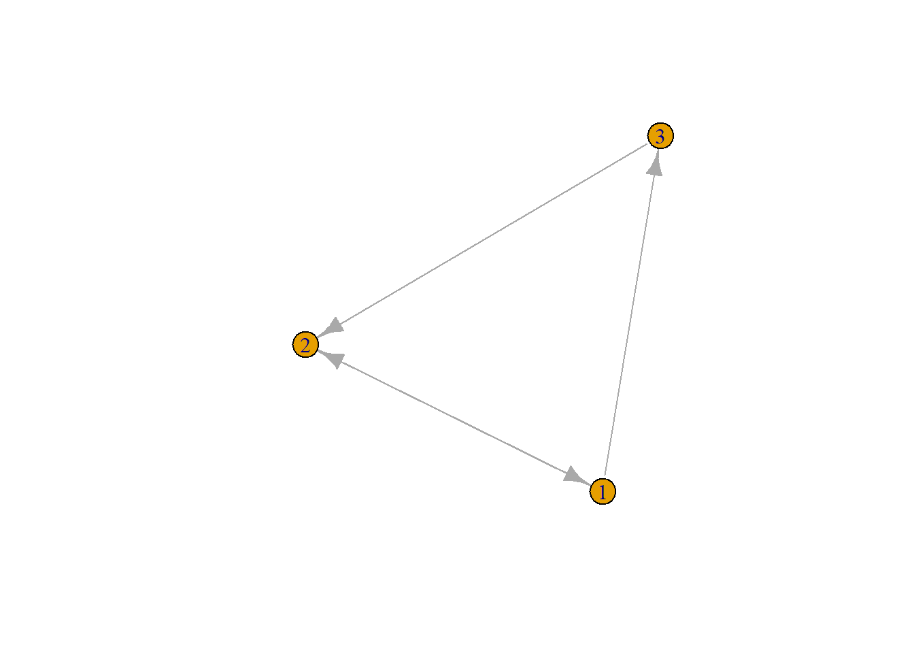

M <- matrix(data = c(1:9),
nrow = 3,
ncol = 3,
byrow = T)
M [,1] [,2] [,3]
[1,] 1 2 3
[2,] 4 5 6
[3,] 7 8 9Matrices are the 4th structured data type we will encounter. A matrix is a two-dimensional vector.
M <- matrix(data = c(1:9),
nrow = 3,
ncol = 3,
byrow = T)
M [,1] [,2] [,3]
[1,] 1 2 3
[2,] 4 5 6
[3,] 7 8 9Indexing of matrices works similar to vectors:
M[row, column].
If we are interested in the cell in the 2nd row, 3rd colum:
M[2,3][1] 6If we are interested in a whole row:
M[2,][1] 4 5 6If we are interested in an entire column:
M[,3][1] 3 6 9With colnames(), the column names of a matrix can be accessed and changed:
colnames(M)NULLcolnames(M) <- c("A", "B", "C")
colnames(M)[1] "A" "B" "C"M A B C
[1,] 1 2 3
[2,] 4 5 6
[3,] 7 8 9rownames() does the same for the rows of a matrix.
What happens if you run the following prompts?
mat <- matrix(1:36, nrow=6)
mat [,1] [,2] [,3] [,4] [,5] [,6]
[1,] 1 7 13 19 25 31
[2,] 2 8 14 20 26 32
[3,] 3 9 15 21 27 33
[4,] 4 10 16 22 28 34
[5,] 5 11 17 23 29 35
[6,] 6 12 18 24 30 36mat <- matrix(1:36, nrow=6, byrow=TRUE)
mat [,1] [,2] [,3] [,4] [,5] [,6]
[1,] 1 2 3 4 5 6
[2,] 7 8 9 10 11 12
[3,] 13 14 15 16 17 18
[4,] 19 20 21 22 23 24
[5,] 25 26 27 28 29 30
[6,] 31 32 33 34 35 36mat[c(1,3),] [,1] [,2] [,3] [,4] [,5] [,6]
[1,] 1 2 3 4 5 6
[2,] 13 14 15 16 17 18mat[1:3,] [,1] [,2] [,3] [,4] [,5] [,6]
[1,] 1 2 3 4 5 6
[2,] 7 8 9 10 11 12
[3,] 13 14 15 16 17 18mat[1:3,4:6] [,1] [,2] [,3]
[1,] 4 5 6
[2,] 10 11 12
[3,] 16 17 18rowSums(mat)[1] 21 57 93 129 165 201colSums(mat)[1] 96 102 108 114 120 126t(mat) [,1] [,2] [,3] [,4] [,5] [,6]
[1,] 1 7 13 19 25 31
[2,] 2 8 14 20 26 32
[3,] 3 9 15 21 27 33
[4,] 4 10 16 22 28 34
[5,] 5 11 17 23 29 35
[6,] 6 12 18 24 30 36mat>4 [,1] [,2] [,3] [,4] [,5] [,6]
[1,] FALSE FALSE FALSE FALSE TRUE TRUE
[2,] TRUE TRUE TRUE TRUE TRUE TRUE
[3,] TRUE TRUE TRUE TRUE TRUE TRUE
[4,] TRUE TRUE TRUE TRUE TRUE TRUE
[5,] TRUE TRUE TRUE TRUE TRUE TRUE
[6,] TRUE TRUE TRUE TRUE TRUE TRUEmat[mat < mean(mat)] [1] 1 7 13 2 8 14 3 9 15 4 10 16 5 11 17 6 12 18mat2 <- rbind(mat,37:42)
mat3 <- cbind(mat2,rowSums(mat2))
dim(mat3)[1] 7 7nrow(mat3)[1] 7ncol(mat3)[1] 7Over time, the global environment often tends to cluster. The names of all objects in the global environment can be accessed with ls():
ls()[1] "has_annotations" "M" "mat" "mat2"
[5] "mat3" With rm(), we can now delete unnecessary objects:
rm(M)If we want to delete everything in the global environment, we can run rm(list = ls())
rm(list = ls())In social network analysis, we use matrices a lot.
A matrix for a network of N actors has N rows and N columns. Rows and columns stand for the actors.
friendships <- matrix(data = c(0,1,1,1,0,0,0,1,0),
byrow = T,
nrow = 3)
rownames(friendships) <- c(1:3)
colnames(friendships) <- c(1:3)
friendships_undirected <- matrix(data = c(0, 1, 1, 1, 0, 1, 1, 1, 0),
byrow = T,
nrow = 3)
rownames(friendships_undirected) <- c(1:3)
colnames(friendships_undirected) <- c(1:3)Can you interpret the following matrix?
friendships 1 2 3
1 0 1 1
2 1 0 0
3 0 1 0friendships_undirected 1 2 3
1 0 1 1
2 1 0 1
3 1 1 0Often, we receive network data in the form of variables in a data frame:
data <- data.frame(id = 1:3,
friend1 = c(2, 1, 2),
friend2 = c(3, 0, 0))
data id friend1 friend2
1 1 2 3
2 2 1 0
3 3 2 0How do we get from here to a friendship matrix?
# Create a matrix of zero's
fmat <- matrix(data = 0,
nrow = length(data$id),
ncol = length(data$id))
fmat [,1] [,2] [,3]
[1,] 0 0 0
[2,] 0 0 0
[3,] 0 0 0colnames(fmat) <- data$id
rownames(fmat) <- data$id
fmat 1 2 3
1 0 0 0
2 0 0 0
3 0 0 0# Now, create a loop
for (i in data$id) { # for every actor
if(!is.na(data$friend1[data$id == i])) { # only proceed if a friend was nominated
alter <- data$friend1[data$id == i]
fmat[i,alter] <- 1
}
if(!is.na(data$friend2[data$id == i])) { # only proceed if a friend was nominated
alter <- data$friend2[data$id == i]
fmat[i,alter] <- 1
}
}
fmat 1 2 3
1 0 1 1
2 1 0 0
3 0 1 0We will most often work with matrices to store relationship information. Most packages for social network analysis, however, internally work with edge lists and adjacency lists, as well. It is thus important to know what they are and how to work with them.
Another way to deal with network data, particularly in sparse networks, are edge lists:
| directed network | undirected network | |
|---|---|---|
| V | 1, 2, 3 | 1, 2, 3 |
| E | (1,2), (1,3), (2,1), (3, 2) | (1,2), (1,3), (2,1), (2, 3), (3, 1), (3, 2) |
They describe a network \((V,E)\), with a set of \(n\) nodes / vertices \(V = {1, ..., n}\) and a set of edges \(E \subseteq V \times V\)
edgelist <- rbind(c(1, 2), c(1,3), c(2,1), c(3,2))Adjacency lists are an array of size \(n\) with each element being a list: the \(i\)th list contains the set of all vertices \(j\) for which there is an edge form \(i\) to \(j\):
| directed network | undirected network | |
|---|---|---|
| 1 | (2, 3) | (2, 3) |
| 2 | (1) | (1, 3) |
| 3 | (2) | (1, 2) |
adjacencylist <- list(as.list(c(2,3)),
as.list(c(2)),
as.list(c(3)))
names(adjacencylist) <- c(1:3)
adjacencylist$`1`
$`1`[[1]]
[1] 2
$`1`[[2]]
[1] 3
$`2`
$`2`[[1]]
[1] 2
$`3`
$`3`[[1]]
[1] 3require(igraph)
friendships <- matrix(data = c(0,1,1,1,0,0,0,1,0),
byrow = T,
nrow = 3)
rownames(friendships) <- c(1:3)
colnames(friendships) <- c(1:3)
fnet <- graph_from_adjacency_matrix(friendships)V(fnet) # get the vertices / nodes of "fnet"+ 3/3 vertices, named, from 48e90f2:
[1] 1 2 3E(fnet) # get the edges / ties of "fnet"+ 4/4 edges from 48e90f2 (vertex names):
[1] 1->2 1->3 2->1 3->2vcount(fnet) # counts the nodes in "fnet"[1] 3length(V(fnet)) # is essentially the same[1] 3ecount(fnet) # counts the edges[1] 4plot(fnet) # simple (and a bit ugly plot). We will learn how to plot networks nicely next week! :-)
We can now add attributes to nodes (actors) and edges (ties):
V(fnet)$age <- c(15, 16, 15)
E(fnet)$distance <- c(0.2, 1.5, 2, 3)
fnetIGRAPH 48e90f2 DN-- 3 4 --
+ attr: name (v/c), age (v/n), distance (e/n)
+ edges from 48e90f2 (vertex names):
[1] 1->2 1->3 2->1 3->2From an existing plot, we can also get its friendship information as a matrix:
new_mat <- as_adjacency_matrix(fnet)
new_mat3 x 3 sparse Matrix of class "dgCMatrix"
1 2 3
1 . 1 1
2 1 . .
3 . 1 .new_adj_list <- as_adj_list(fnet)
new_adj_list$`1`
+ 3/3 vertices, named, from 48e90f2:
[1] 2 2 3
$`2`
+ 3/3 vertices, named, from 48e90f2:
[1] 1 1 3
$`3`
+ 2/3 vertices, named, from 48e90f2:
[1] 1 2new_edge_list <- as_edgelist(fnet)
new_edge_list [,1] [,2]
[1,] "1" "2"
[2,] "1" "3"
[3,] "2" "1"
[4,] "3" "2" g1 <- graph.formula(1-2, 1-3, 2-3, 2-4, 3-5, 4-5, 4-6, 4-7, 5-6, 6-7)
g2 <- graph.formula(1-+2, 1-+3, 2++3, 2-+4, 3++5, 4+-5)png
2 $$
M =
\[\begin{pmatrix} 0 & 1 & 0 & 1 & 0 & 1\\ 1 & 0 & 0 & 1 & 0 & 1 \\ 0 & 0 & 0 & 1 & 0 & 1 \\ 0 & 0 & 0 & 0 & 0 & 1 \\ 0 & 1 & 0 & 1 & 0 & 1 \\ 1 & 0 & 0 & 1 & 0 & 0 \end{pmatrix}\]$$
Using networks g1, g2, and g3, unify the three networks to a big network gu. TIP: look at the function union() from the igraph package!
Add the edge attribute “weight” to the network gu and set it to 1.
Using the following dataframe, construct an adjacency matrix:
df <- data.frame(id = c(1:10),
friend1 = c(9, 8, 10, 3, 1, 4, 2, 6, 7, 5), # first friend nomination
friend2 = c(5, 7, 2, 2, 3, 7, 3, 10, 1, 8), # second friend nomination
friend3 = c(NA, NA, 4, 6, 10, 7, 2, NA, NA, 3), # third friend nomination
age = c(15, 15, 15, 16, 14, 14, 14, 15, 16, 14), # age in years
gender = c(2, 0, 1, 0, 1, 1, 2, 0, 0, 1)) # gender: 0= male, 1= female, 2= divers
Social networks
Terminology
A network is a set of actors connected by social relationships.
In technical terms, we also speak of:
Vertices / Nodes == actors, and Edges / ties == relationships.
Classes of Social Networks
We distinguish two classes of networks:
directed networks:
undirected networks:
directed networks are more realistic in most contexts
undirected networks are easier to analyse